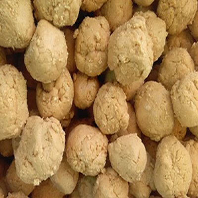

One District One Product(Jaggery)
Jaggery making in Ayodhya is being carried out traditionally since generations. About 20% of the total agricultural land of the district is used for sugarcane cultivation. The district mainly produces jaggery and jaggery-products like sesame gajak, ladoo, chikki, gud ke ladoo etc. Sugarcane, the raw material required for making jaggery, is present here in abundance.
